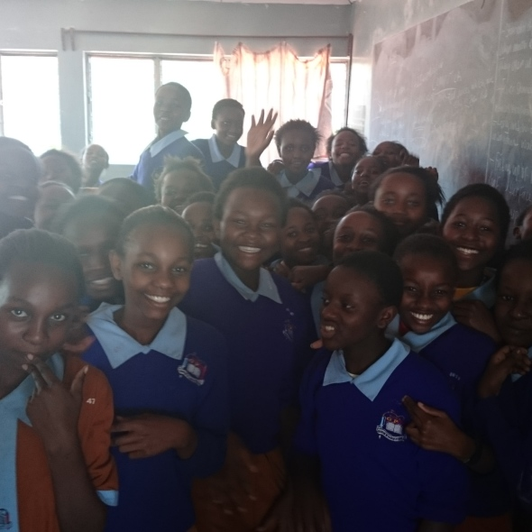

Chogoria Girls Primary School is a public primary school in Chogoria. This school is run by religious organization. It is a boarding school. This educational institution is a ordinary and girls only type of institution.The pupil to classroom ratio in this school is 39.6:1 and the pupil to , they are so many pupilas in the school,they are all obidient that why we always pass all our exams and we are always hardworking. and all good girls we love the way our teachers treat all of us .It was built along time ago it consist of a school and a dorm it always the best school in kenya.the dorms are so nice built of stones and mabati they are nice and kind to every pupil. class 6,7 and 8 always clean the dinninghall(bwalo) after every meal they make sure it clean.
girls toilets and 8 teachers toilets. The total numbers of students enrolls in this school are 633. GOK TSC males are 7 PTA male and female number is 3 and 5 respectively. There are 8 non-teaching staff males and 8 female non-teaching staff in Chogoria Girls Primary School, Chogoria.chogria girls is a nice school. it is always the best school in tharaka nithi . I love the school so much .It is a nice school. it is the best school i have ever gone to